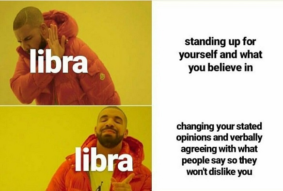

Symbol:The Scales
Element:Air
Quality:Cardinal
Keyword:"I Balance"
Ruling Planet:Venus
Strengths:Fairness, Diplomatic, Just, Co-operative
Weakness:Grudge-holding, Self-pity, Indecisive
Intelligent, kind, and always willing to put others before themselves, People born under this sign value harmony in all forms. Ruled by Venus,
the planet of beauty, Libra adores a life that looks good. As the master of compromise and diplomacy, Libra is adept at seeing all points of view,
and excels at crafting compromises and effecting mediation between others. This sign has a rich inner life yet loves other people, and
they're always happiest with a large group of friends, family, and co-workers on whom they can count. They can be emotional at times and
hence need someone who can handle their soft sides.

Libras are known for their obsession with attractiveness and external orientation. They believe that looking good can bring them very far, and
they have proven this on many occasions. However, Libras can also be called out for their vanity. They are serious, charming, graceful and good
humorists. They have a tendency to be magnets for people, drawing many people in to them. Libras are attractive, that has been deeply
established in the Zodiac. However, they also really admire harmony, and they are fond of social aspects as well.
Libra is the sign of marriage, making its representatives open for traditional pathways of love. Even though the element of Air gives them a lot
of flexibility, they will still feel the strong pull towards tradition and their desires will eventually turn to love put on paper,
well-organized and serving a purpose to create a certain image for the outer world. In a way, each Libra is in search of a partner who has the
ability to set clear boundaries, as if expecting to be protected by them but without their pride being endangered in the process.
Libra is one dot of balance in the sea of different extremes, manifested only through the fifteenth degree of this magnificent sign, an object
among animals and people. There is something awfully insecure about Libra, as if they were unsure which plate to burden next, aware that things
pass and teach us to be careful around other people. Whatever we do in our lifetimes, only serves to point the way for our Souls towards that
“higher power” to finally measure our existence. Telling us where we went wrong or what we did right, Libras unconsciously teach us that true
liberation hides in lightness.